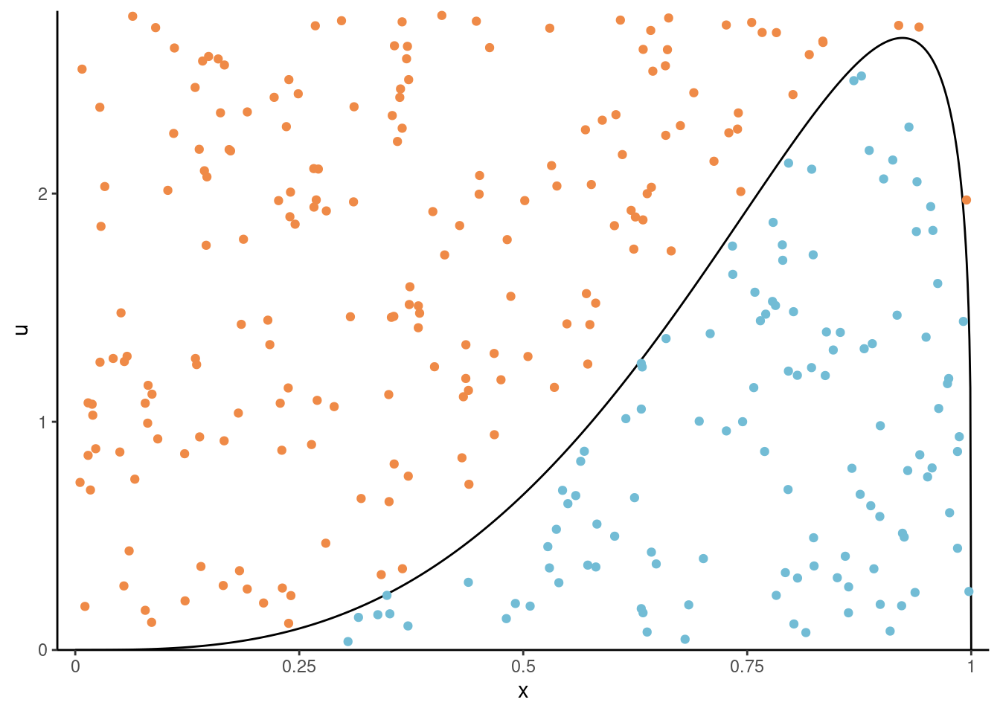
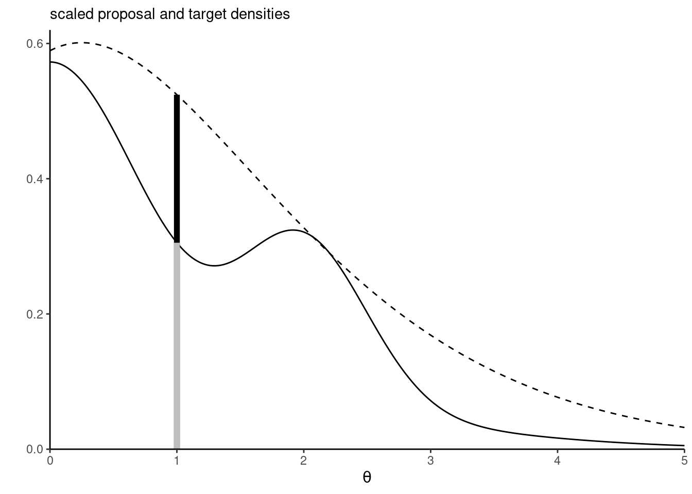
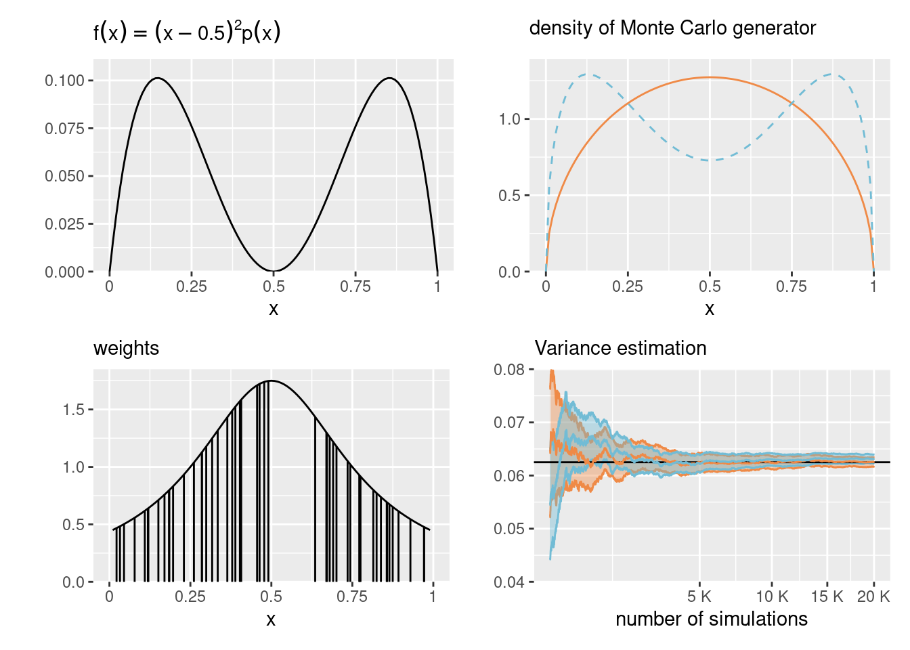
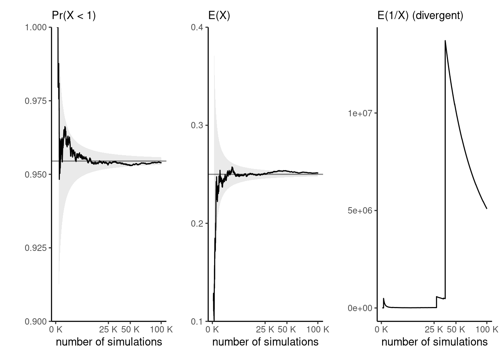
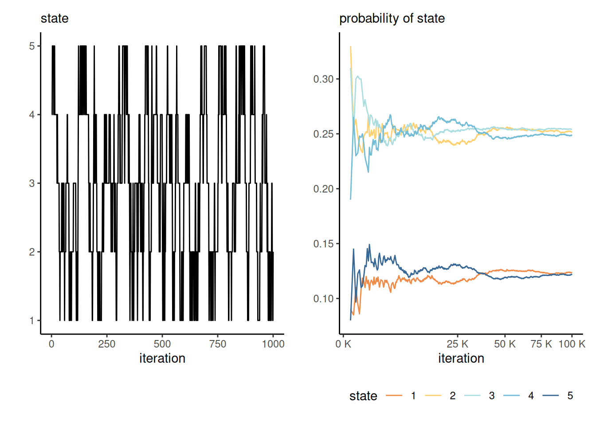
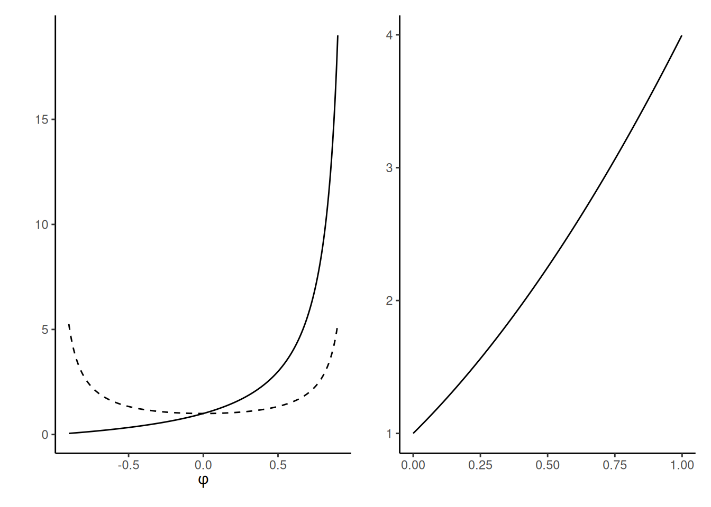

n <- 1e4L
-log(runif(n)) / 2 #simulate expo(2)4 Monte Carlo methods
There are two major approaches to handling the problem of the unknown normalizing constant: deterministic and stochastic approximations. The former includes Laplace and nested Laplace approximations, variational methods and expectation propagation. This chapter covers the latter, stochastic approximations, and focuses on implementation of basic Markov chain Monte Carlo algorithms. The simulation algorithms circumvent the need to calculate the normalizing constant of the posterior entirely. We present several examples of implementations, several tricks for tuning and diagnostics of convergence.
We have already used Monte Carlo methods to compute posterior quantities of interest in conjugate models. Outside of models with conjugate priors, the lack of closed-form expression for the posterior precludes inference. Indeed, calculating the posterior probability of an event, or posterior moments, requires integration of the normalized posterior density and thus knowledge of the marginal likelihood. It is seldom possible to sample independent and identically distributed (iid) samples from the target, especially if the model is high dimensional: rejection sampling and the ratio of uniform method are examples of Monte Carlo methods which can be used to generate iid draws. Ordinary Monte Carlo methods suffer from the curse of dimensionality, with few algorithms are generic enough to be useful in complex high-dimensional problems. Instead, we will construct a Markov chain with a given invariant distribution corresponding to the posterior. Markov chain Monte Carlo methods generate correlated draws that will target the posterior under suitable conditions.1
4.1 Monte Carlo methods
Monte Carlo methods relies on the ability to simulate random variable. If the quantile function admits a closed-form, we can use this to simulation. Recall that if a random variable \(X\) has distribution function \(F,\) then we can define it’s generalized inverse \[\begin{align*} F^{-1}(u) = \inf\{x: f(x) \geq u\} \end{align*}\] and if \(G\) is continuous, then \(F(X) \sim \mathsf{unif}(0,1).\) We can thus simulate data using the quantile function \(F^{-1}(U),\) with \(U \sim \mathsf{unif}(0,1).\)
Example 4.1 (Simulation of exponential variates) The distribution function of \(Y \sim \mathsf{expo}(\lambda)\) is \(F(y) = \exp(-\lambda y)\), so the quantile function is \(F^{-1}(u) = -\log(u) / \lambda\)
Theorem 4.1 (Fundamental theorem of simulation) Consider a \(d\)-variate random vector \(\boldsymbol{X},\) independently \(U \sim \mathsf{unif}(0,1)\) and \(c>0\) any positive constant. If \((\boldsymbol{X}, U)\) is uniformly distributed on the set \[\begin{align*} \mathcal{A}_{f}=\{(\boldsymbol{x}, u): 0 \leq u \leq c f(\boldsymbol{x})\}, \end{align*}\] then \(\boldsymbol{X}\) has density \(f(\boldsymbol{x}).\) Conversely, if \(\boldsymbol{X}\) has density \(f(\boldsymbol{x})\) and \(U\sim\mathsf{unif}(0,1)\) independently, then \([\boldsymbol{X}, cUf(\boldsymbol{X})]\) is uniformly distributed on \(\mathcal{A}_f\)
We cam thus view \(f\) as the marginal density of \(\boldsymbol{X}\) since \(f(\boldsymbol{x}) = \int_0^{f(\boldsymbol{x})} \mathrm{d} u.\) If we can simulate uniformly from \(\mathcal{A}_{f},\) then, we can discard the auxiliary variable \(u.\) See Devroye (1986), Theorem 3.1 for a proof.

The fundamental theorem of simulation underlies rejection sampling, the generalized ratio of uniform and slice sampling. The density function needs only to be known up to normalizing constant thanks to the arbitrariness of \(c,\) which will also allow us to work with unnormalized density functions.
Proposition 4.1 (Rejection sampling) Rejection sampling (also termed accept-reject algorithm) samples from a random vector with density \(p(\cdot)\) by drawing candidates from a proposal with density \(q(\cdot)\) with nested support, \(\mathrm{supp}(p) \subseteq \mathrm{supp}(q).\) The density \(q(\cdot)\) must be such that \(p(\boldsymbol{\theta}) \leq C q(\boldsymbol{\theta})\) for \(C \geq 1\) for all values of \(\boldsymbol{\theta}\) in the support of \(p(\cdot).\)
- Generate \(\boldsymbol{\theta}^{\star}\) from the proposal with density \(q\) and \(U \sim \mathsf{U}(0,1)\)
- Compute the ratio \(R \gets p(\boldsymbol{\theta}^{\star})/ q(\boldsymbol{\theta}^{\star}).\)
- If \(R \geq CU,\) return \(\boldsymbol{\theta},\) else go back to step 1.

Rejection sampling requires the proposal \(q\) to have a support at least as large as that of \(p\) and resemble closely the density. It should be chosen so that the upper bound \(C\) is as sharp as possible and close to 1. The dominating density \(q\) must have heavier tails than the density of interest. The expected number of simulations needed to accept one proposal is \(C.\) Finally, for the method to be useful, we need to be able to simulate easily and cheaply from the proposal. The optimal value of \(C\) is \(C = \sup_{\boldsymbol{\theta}} p(\boldsymbol{\theta}) / q(\boldsymbol{\theta}).\) This quantity may be obtained by numerical optimization, by finding the mode of the ratio of the log densities if the maximum is not known analytically.
Example 4.2 (Truncated Gaussian distribution) Consider the problem of sampling from a Gaussian distribution \(Y \sim \mathsf{Gauss}(\mu, \sigma^2)\) truncated in the interval \([a, b],\) which has density \[\begin{align*} f(x; \mu, \sigma, a, b) = \frac{1}{\sigma}\frac{\phi\left(\frac{x-\mu}{\sigma}\right)}{\Phi\{(b-\mu)/\sigma\}-\Phi\{(a-\mu)/\sigma\}}. \end{align*}\] where \(\phi(\cdot), \Phi(\cdot)\) are respectively the density and distribution function of the standard Gaussian distribution.
Since the Gaussian is a location-scale family, we can reduce the problem to sampling \(X\) from a standard Gaussian truncated on \(\alpha = (a-\mu)/\sigma\) and \(\beta = (b-\mu)/\sigma\) and back transform the result as \(Y = \mu + \sigma X.\)
A crude accept-reject sampling algorithm would consider sampling from the same untruncated distribution with density \(g(X) = \sigma^{-1}\phi\{(x-\mu)/\sigma\},\) and the acceptance ratio is \(C^{-1}=\{\Phi(\beta) - \Phi(\alpha)\}.\) We thus simply simulate points from the Gaussian and accept any that falls within the bounds.
# Standard Gaussian truncated on [0,1]
candidate <- rnorm(1e5)
trunc_samp <- candidate[candidate >= 0 & candidate <= 1]
# Acceptance rate
length(trunc_samp)/1e5[1] 0.34028# Theoretical acceptance rate
pnorm(1)-pnorm(0)[1] 0.3413447We can of course do better: if we consider a random variable with distribution function \(F,\) but truncated over the interval \([a,b],\) then the resulting distribution function is \[\frac{F(x) - F(a)}{F(b)-F(a)}, \qquad a \leq x \leq b,\] and we can invert this expression to get the quantile function of the truncated variable in terms of the distribution function \(F\) and the quantile function \(F^{-1}\) of the original untruncated variable.
For the Gaussian, this gives \[\begin{align*}
X \sim \Phi^{-1}\left[\Phi(a) + \{\Phi(b)-\Phi(a)\}U\right]
\end{align*}\] for \(U \sim \mathsf{U}(0,1).\) Although the quantile and distribution functions of the Gaussian, pnorm and qnorm in R, are very accurate, this method will fail for rare event simulation because it will return \(\Phi(x) = 0\) for \(x \leq -39\) and \(\Phi(x)=1\) for \(x \geq 8.3,\) implying that \(a \leq 8.3\) for this approach to work (Botev and L’Écuyer 2017).
Consider the problem of simulating events in the right tail for a standard Gaussian where \(a > 0\); Marsaglia’s method (Devroye 1986, 381), can be used for that purpose. Write the density of the Gaussian as \(f(x) = \exp(-x^2/2)/c_1,\) where \(c_1 = \int_{a}^{\infty}\exp(-z^2/2)\mathrm{d} z,\) and note that \[c_1f(x) \leq \frac{x}{a}\exp\left(-\frac{x^2}{2}\right)= a^{-1}\exp\left(-\frac{a^2}{2}\right)g(x), \qquad x \geq a;\] where \(g(x)\) is the density of a Rayleigh variable shifted by \(a,\) which has distribution function \(G(x) = 1-\exp\{(a^2-x^2)/2\}\) for \(x \geq a.\) We can simulate such a random variate \(X\) through the inversion method. The constant \(C= \exp(-a^2/2)(c_1a)^{-1}\) approaches 1 quickly as \(a \to \infty.\)
The accept-reject thus proceeds with
- Generate a shifted Rayleigh above \(a,\) \(X \gets \{a^2 - 2\log(U)\}^{1/2}\) for \(U \sim \mathsf{U}(0,1)\)
- Accept \(X\) if \(XV \leq a,\) where \(V \sim \mathsf{U}(0,1).\)
Should we wish to obtain samples on \([a,b],\) we could instead propose from a Rayleigh truncated above at \(b\) (Botev and L’Écuyer 2017).
a <- 8.3
niter <- 1000L
X <- sqrt(a^2 + 2*rexp(niter))
samp <- X[runif(niter)*X <= a]For a given candidate density \(g\) which has a heavier tail than the target, we can resort to numerical methods to compute the mode of the ratio \(f/g\) and obtain the bound \(C\); see Albert (2009), Section 5.8 for an insightful example. A different use for the simulations is to approximate integrals numerically. Consider a target distribution with finite expected value. The law of large numbers guarantees that, if we can draw observations from our target distribution, then the sample average will converge to the expected value of that distribution, as the sample size becomes larger and larger, provided the expectation is finite. We can thus compute the probability of any event or the expected value of any (integrable) function by computing sample averages; the cost to pay for this generality is randomness.
Proposition 4.2 (Monte Carlo integration) Specifically, suppose we are interested in the average \(\mathsf{E}\{g(X)\}\) of \(X\) with density or mass function \(f\) supported on \(\mathcal{X}\) for some function \(g.\) Monte Carlo integration proceeds by drawing \(B\) independent samples \(x_1, \ldots, x_B\) from density \(p\) and evaluating the empirical average of \(g,\) with \[\begin{align*} \mathsf{E}\{g(X)\} = \int_{\mathcal{X}} g(x) p(x) \mathrm{d} x \approx \widehat{\mathsf{E}}\{g(X)\}=\frac{1}{B}\sum_{b=1}^B g(x_b). \end{align*}\] By the law of large number, this estimator is convergent when \(B \to \infty\) provided that the expectation is finite. If the variance of \(g(X)\) is finite, we can approximate the latter by the sample variance of the simple random sample and obtain the Monte Carlo standard error of the estimator \[\begin{align*} \mathsf{se}^2[\widehat{\mathsf{E}}\{g(X)\}] = \frac{1}{B(B-1)} \sum_{b=1}^B \left[ g(x_b) - \widehat{\mathsf{E}}\{g(X)\} \right]^2. \end{align*}\]
We can also use a similar idea to evaluate the integral of \(g(X)\) if \(X\) has density \(p,\) by drawing instead samples from \(q.\) This is formalized in the next proposition.
Proposition 4.3 (Importance sampling) Consider a random variable \(X\) with density \(p(x)\) supported on \(\mathcal{X}.\) We can calculate the integral \(\mathsf{E}_p\{g(X)\} = \int_{\mathcal{X}} g(x) p(x) \mathrm{d}x\) by considering instead draws from a density \(q(\cdot)\) with nested support, \(\mathcal{X} \subseteq \mathrm{supp}(q).\) Then, \[\begin{align*} \mathsf{E}\{g(X)\} = \int_{\mathcal{X}} g(x) \frac{p(x)}{q(x)} q(x) \mathrm{d} x \end{align*}\] and we can proceed similarly by drawing samples from \(q.\) This is most useful when the variance is finite, which happens if the integral \[\begin{align*} \int_{\mathcal{X}} g^2(x) \frac{p^2(x)}{q(x)} \mathrm{d} x < \infty. \end{align*}\] An alternative Monte Carlo estimator, which is biased but has lower variance, is obtained by drawing independent \(x_1, \ldots, x_B\) from \(q\) and taking instead the weighted average of \[\begin{align*} \widetilde{\mathsf{E}}\{g(X)\} =\frac{B^{-1} \sum_{b=1}^B w_b g(x_b) }{B^{-1}\sum_{b=1}^B w_b}. \end{align*}\] with weights \(w_b = p(x_b)/q(x_b).\) The latter equal 1 on average, so one could omit the denominator without harm. The standard error for the independent draws equals \[\begin{align*} \mathsf{se}^2[\widetilde{\mathsf{E}}\{g(X)\}] = \frac{ \sum_{b=1}^B w_b^2 \left[ g(x_b) - \widetilde{\mathsf{E}}\{g(X)\} \right]^2}{\left(\sum_{b=1}^B w_b\right)^2}. \end{align*}\]
Example 4.3 (Importance sampling for the variance of a beta distribution) Consider \(X \sim \mathsf{beta}(\alpha, \alpha)\) for \(\alpha > 1\) with \(\mathsf{E}(X)=0.5\) since the density is symmetric. We tackle the estimation of the variance, which can be written as \(\mathsf{E}\{(X - 0.5)^2\}.\) While we can easily derive the theoretical expression, equal to \(\mathsf{Va}(X) = \{4 \cdot (2\alpha+1)\}^{-1},\) we can also use Monte Carlo integration as proof of concept.
Rather than simulate directly from our data generating mechanism, we can use an importance sampling density \(q(x)\) which puts more mass away from \(0.5\) where the integral is zero. Consider the equiweighted mixture of \(\mathsf{beta}(\alpha, 3\alpha)\) and \(\mathsf{\beta}(3\alpha, \alpha)\), which is bimodal. Figure 4.3 shows the function we wish to integrate, the density and the importance sampling density, and the weighting function \(p(x)/q(x)\) of the first 50 observations drawn from \(q(x)\) with \(\alpha=1.5.\) The variance ratio shows an improvement of more than 9% for the same Monte Carlo sample size.
B <- 2e4L
alpha <- 1.5
factor <- 3
# Mode at the mean 0.5
X0 <- rbeta(n = B, alpha, alpha)
px <- function(x){dbeta(x, alpha, alpha)}
# Importance sampling density - mixture of two betas (alpha, factor*alpha)
X1 <- ifelse(runif(B) < 0.5, rbeta(B, alpha, factor*alpha), rbeta(B, factor*alpha, alpha))
qx <- function(x){0.5*dbeta(x, alpha, factor*alpha) + 0.5*dbeta(x, factor*alpha, alpha)}
# Function to integrate - gives variance of a symmetric beta distribution
g <- function(x){(x - 0.5)^2}
# Weights for importance sampling
w <- px(X1)/qx(X1)
# Monte Carlo integration
mc_est <- mean(g(X0))
mc_var <- var(g(X0))/B
# Importance sampling weighted mean and variance
is_est <- weighted.mean(g(X1), w = w) # equivalent to mean(g(X1)*w)/mean(w)
is_var <- sum(w^2*(g(X1) - is_est)^2)/ (sum(w)^2)
# True value for the beta variance
th_est <- 1/(4*(2*alpha+1))
# Point estimates and differences
round(c(true = th_est, "monte carlo" = mc_est, "importance sampling" = is_est),4) true monte carlo importance sampling
0.0625 0.0626 0.0631 # Ratio of std. errors for means
mc_var/is_var # value > 1 means that IS is more efficient[1] 1.095982

Example 4.4 (Expectations of functions of a gamma variate) Consider \(X \sim \mathsf{gamma}(\alpha, \beta),\) a gamma distribution with shape \(\alpha\) and rate \(\beta.\) We can compute the probability that \(X < 1\) easily by Monte Carlo since \(\Pr(X <1) = \mathsf{E}\{\mathrm{I}(X<1)\}\) and this means we only need to compute the proportion of draws less than one. We can likewise compute the mean \(g(x) = x\) or the variance as \(\mathsf{E}(X^2) - \{\mathsf{E}(X)\}^2.\)
Suppose we have drawn a Monte Carlo sample of size \(B.\) If the function \(g(\cdot)\) is square integrable,2 with variance \(\sigma^2_g,\) then a central limit theorem applies. In large samples and for independent observations, our Monte Carlo average \(\widehat{\mu}_g = B^{-1}\sum_{b=1}^B g(X_i)\) has variance \(\sigma^2_g/B.\) We can approximate the unknown variance \(\sigma^2_g\) by it’s empirical counterpart.3. Note that, while the variance decreases linearly with \(B,\) the choice of \(g\) impacts the speed of convergence: for our examples, we can compute \[\sigma^2_g =\Pr(X \leq 1)\{1-\Pr(X \leq 1)\}=0.0434\] (left) and \(\sigma^2_g=\alpha/\beta^2=1/8\) (middle plot).
Figure 4.4 shows the empirical trace plot of the Monte Carlo average (note the \(\sqrt{B}\) \(x\)-axis scale!) as a function of the Monte Carlo sample size \(B\) along with 95% Wald-based confidence intervals (gray shaded region), \(\widehat{\mu}_g \pm 1.96 \times \sigma_g/\sqrt{B}.\) We can see that the ‘likely region’ for the average shrinks with \(B.\)
What happens if our function is not integrable? The right-hand plot of Figure 4.4 shows empirical averages of \(g(x) = x^{-1},\) which is not integrable if \(\alpha < 1.\) We can compute the empirical average, but the result won’t converge to any meaningful quantity regardless of the sample size. The large jumps are testimonial of this.

Example 4.5 (Tail probability of a Gaussian distribution) Consider estimation of the probability that a standard Gaussian random variable exceeds \(a=4,\) which is \(p=1-\Phi(a).\) We can use standard numerical approximations to the distribution function implemented in any software package, which shows this probability is roughly one in \(3.1574\times 10^{4}.\)
If we consider a truncated Gaussian above \(a,\) then the integral of \(\mathsf{I}(x>a)\) is one (since the truncated Gaussian is a valid density). Thus, we can estimate rather the normalizing constant by simulating standard Gaussian and comparing this with the importance sampling estimator, using the knowledge of the value of the integral to derive rather the normalizing constant. Monte Carlo integration from with \(B=10^6\) is demonstrated using the following code
a <- 4
B <- 1e6L # 1 million draws
exact <- pnorm(a, lower.tail = FALSE)
# Vanilla Monte Carlo
X <- rnorm(B)
mc <- mean(X >= a)
# Importance sampling with Rayleigh
Y <- sqrt(a^2 + 2*rexp(B))
drayleigh <- function(x, a){ x*exp((a^2-x^2)/2)}
is <- mean(dnorm(Y)/drayleigh(Y, a = a))
# Relative error
c(mc = (mc - exact)/exact, is = (is - exact)/exact) mc is
-2.119405e-02 -2.927613e-05 4.2 Markov chains
Before going forward with algorithms for sampling, we introduce some terminology that should be familiar to people with a background in time series analysis.
Definition 4.1 (Discrete-time stochastic process) A discrete-time stochastic process is a random sequences whose elements are part of some set (finite or countable), termed state space \(\mathcal{S}.\) We can encode the probability of moving from one state to the next via a transition matrix, whose rows contain the probabilities of moving from one state to the next and thus sum to one.
Definition 4.2 (Stationarity and Markov property) A stochastic (i.e., random) process is (strongly) stationary if the distribution of \(\{X_1, \ldots, X_t\}\) is the same as that of \(\{X_{n+1}, \ldots X_{t+n}\}\) for any value of \(n\) and given \(t.\)
It is weakly stationary if the expected value is constant, meaning \(\mathsf{E}(X_t) = \mu\) for all time points \(t\), and the covariance at lag \(h\), \(\mathsf{Cov}(X_t, X_{t+h}) = \gamma_h\), does not depend on \(t\). Strong stationarity implies weak stationarity.
A stochastic process is markovian if it satisfies the Markov property: given the current state of the chain, the future only depends on the current state and not on the past.
Autoregressive processes are not the only ones we can consider, although their simplicity lends itself to analytic calculations.
Example 4.6 (Stationarity and AR(1)) Consider a Gaussian \(\mathsf{AR}(1)\) model with \(Y_t \sim \mathsf{Gauss}\{\mu + \phi(Y_{t-1} - \mu), \sigma^2\}\).
Using the law of iterated expectation and variance, it the process is weakly stationary, then \(\mathsf{E}_{Y_{t}}(Y_t)=\mathsf{E}_{Y_{t-1}}(Y_{t-1})\) \[\begin{align*} \mathsf{E}_{Y_{t}}(Y_t) &= \mathsf{E}_{Y_{t-1}}\left\{\mathsf{E}_{Y_{t} \mid Y_{t-1}}(Y_t)\right\} \\&= \mu(1-\phi) + \phi\mathsf{E}_{Y_{t-1}}(Y_{t-1}) \end{align*}\] and so the unconditional mean is \(\mu\). For the variance, we have \[\begin{align*} \mathsf{E}_{Y_{t}}(Y_t) &= \mathsf{E}_{Y_{t-1}}\left\{\mathsf{Va}_{Y_{t} \mid Y_{t-1}}(Y_t)\right\} + \mathsf{Va}_{Y_{t-1}}\left\{\mathsf{E}_{Y_{t} \mid Y_{t-1}}(Y_t)\right\}\\ & = \sigma^2 + \mathsf{Va}_{Y_{t-1}}\left\{\mu + \phi(Y_{t-1} - \mu)\right\} \\&= \sigma^2 + \phi^2 \mathsf{Va}_{Y_{t-1}}(Y_{t-1}). \end{align*}\] and we recover the formulas from Example 1.17.
The covariance at lag \(k\), in terms of innovations, gives \[\begin{align*} \gamma_k = \mathsf{Co}(Y_t, Y_{t-k}) = \mathsf{Va}(\phi Y_{t-1}, Y_{t-k}) + \mathsf{Va}(\varepsilon_t, Y_{t-k}) = \phi \gamma_{k-1} \end{align*}\] so by recursion \(\gamma_k = \gamma^k\mathsf{Va}(Y_t)\).
The \(\mathsf{AR}(1)\) process is first-order Markov since the conditional distribution \(p(Y_t \mid Y_{t-1}, \ldots, Y_{t-p})\) equals \(p(Y_t \mid Y_{t-1}).\)
We can run a Markov chain by sampling an initial state \(X_0\) at random from \(\mathcal{S}\) and then consider the transitions from the conditional distribution, sampling \(p(X_t \mid X_{t-1}).\) This results in correlated draws, due to the reliance on the previous observation.
When can we use output from a Markov chain in place of independent Monte Carlo draws? The assumptions laid out in the ergodic theorem, which provides guarantees for the convergence of sample average, are that the chain is irreducible. If the chain is also acyclic, the chain has a unique stationary distribution.
Consider a Markov chain on integers \(\{1, 2, 3\}.\) Because of the Markov property, the history of the chain does not matter: we only need to read the value \(i=X_{t-1}\) of the state and pick the \(i\)th row of the transition matrix \(\mathbf{P}\) to know the probability of the different moves from the current state.
Irreducible means that the chain can move from anywhere to anywhere, so it doesn’t get stuck in part of the space forever. A transition matrix such as \(P_1\) below describes a reducible Markov chain, because once you get into state \(2\) or \(3,\) you won’t escape. With reducible chains, the stationary distribution need not be unique, and so the target would depend on the starting values.
Cyclical chains loop around and visit periodically a state: \(P_2\) is an instance of transition matrix describing a chain that cycles from \(1\) to \(3,\) \(3\) to \(2\) and \(2\) to \(1\) every three iteration. An acyclic chain is needed for convergence of marginals.
\[ P_1 = \begin{pmatrix} 0.5 & 0.3 & 0.2 \\ 0 & 0.4 & 0.6 \\ 0 & 0.5 & 0.5 \end{pmatrix}, \qquad P_2 = \begin{pmatrix} 0 & 0 & 1 \\ 1 & 0 & 0 \\ 0 & 1 & 0 \end{pmatrix}. \]
If a chain is irreducible and aperiodic, it has a unique stationary distribution and the limiting distribution of the Markov chain will converge there. For example, we consider a transition \(P_3\) on \(1, \ldots, 5\) defined as \[ P_3 = \begin{pmatrix} \frac{2}{3} & \frac{1}{3} & 0 & 0 & 0 \\ \frac{1}{6} & \frac{2}{3} & \frac{1}{6} & 0 & 0 \\ 0 & \frac{1}{6} & \frac{2}{3} & \frac{1}{6} & 0 \\ 0 & 0 & \frac{1}{6} & \frac{2}{3} & \frac{1}{6} \\ 0 & 0 & 0 & \frac{1}{3} & \frac{2}{3} \\ \end{pmatrix} \] The stationary distribution is the value of the row vector \(\boldsymbol{p},\) such that \(\boldsymbol{p} = \boldsymbol{p}\mathbf{P}\) for transition matrix \(\mathbf{P}\): we get \(\boldsymbol{p}_1=(0, 5/11, 6/11)\) for \(P_1,\) \((1/3, 1/3, 1/3)\) for \(P_2\) and \((1,2,2,2,1)/8\) for \(P_3.\)
While the existence of a stationary distribution require aperiodicity, the latter is an hindrance from a computational perspective as ergodicity is valid without it.
Figure 4.5 shows the path of the walk and the empirical proportion of the time spent in each state, as time progress. Since the Markov chain has a unique stationary distribution, we expect these to converge to it.

Proposition 4.4 (Effective sample size) Intuitively, a sample of correlated observations carries less information than an independent sample of draws. If we want to compute sample averages \(\overline{Y}_T=(Y_1+ \cdots + Y_T)/T,\) the variance will be \[\begin{align*} \mathsf{Va}\left(\overline{Y}_T\right) = \frac{1}{T^2}\sum_{t=1}^T \mathsf{Va}(Y_t) + \frac{2}{T^2} \sum_{t=1}^{T-1}\sum_{s = t+1}^T \mathsf{Co}(Y_t, Y_s). \end{align*}\]
In the independent case, the covariance is zero so we get the sum of variances. If the process is stationary, the covariances at lag \(k\) are the same regardless of the time index and the variance is some constant, say \(\sigma^2\); this allows us to simplify calculations, \[\begin{align*} \mathsf{Va}(\overline{Y}_T) = \sigma^2 \left\{ 1 + \frac{2}{T}\sum_{t=1}^{T-1} (T-t) \mathsf{Cor}(Y_{T-k}, Y_{T})\right\}. \end{align*}\] Denote the lag-\(k\) autocorrelation \(\mathsf{Cor}(Y_{t}, Y_{t+k})=\gamma_k.\) Under technical conditions4, a central limit theorem applies and we get an asymptotic variance for the mean of \[\begin{align*} \lim_{T \to \infty} T\mathsf{Va}\left(\overline{Y}_T\right) = \sigma^2 \left\{1+2\sum_{t=1}^\infty \gamma_t\right\}. \end{align*}\] This statement holds only if we start with draws from the stationary distribution, otherwise bets are off.
We need the effective sample size of our Monte Carlo averages based on a Markov chain of length \(B\) to be sufficient for the estimates to be meaningful. The effective sample size is, loosely speaking, the equivalent number of observations if the marginal posterior draws where independent and more formally \[ \mathsf{ESS} = \frac{B}{\left\{1+2\sum_{t=1}^\infty \gamma_t\right\}} \tag{4.1}\] where \(\gamma_t\) is the lag \(t\) correlation. The relative effective sample size is simply the fraction of the effective sample size over the Monte Carlo number of replications: small values of \(\mathsf{ESS}/B\) indicate pathological or inefficient samplers. If the ratio is larger than one, it indicates the sample is superefficient (as it generates negatively correlated draws).
In practice, we replace the unknown autocorrelations by sample estimates and truncate the series in Equation 4.1 at the point where they become negligible — typically when the consecutive sum of two consecutive becomes negative; see Section 1.4 of the Stan manual or Section 1.10.2 of Geyer (2011) for details.
Example 4.7 The lag-\(k\) correlation of the stationary autoregressive process of order 1 is \(\phi^k,\) so summing the series gives an asymptotic variance of \(\sigma^2(1+\phi)/(1-\phi).\) We can constrast that to the variance of the stationary distribution for an independent sample, which is \(\sigma^2/(1-\phi^2).\) The price to pay for having correlated samples is inefficiency: the higher the autocorrelation, the larger the variability of our mean estimators.

We can see from Figure 4.6 that, when the autocorrelation is positive (as will be the cause in all applications of interest), we will suffer from variance inflation. To get the same uncertainty estimates for the mean with an \(\mathsf{AR}(1)\) process with \(\phi \approx 0.75\) than with an iid sample, we would need nine times as many observations: this is the prize to pay.
Proposition 4.5 (Uncertainty estimation with Markov chains) With a simple random sample containing independent and identically distributed observations, the standard error of the sample mean is \(\sigma/\sqrt{n}\) and we can use the empirical standard deviation \(\widehat{\sigma}\) to estimate the first term. For Markov chains, the correlation prevents us from using this approach. The output of thecoda package are based on fitting a high order autoregressive process to the Markov chain and using the formula of the unconditional variance of the \(\mathsf{AR}(p)\) to obtain the central limit theorem variance. An alternative method recommended by Geyer (2011) and implemented in his R package mcmc, is to segment the time series into batch, compute the means of each non-overlapping segment and use this standard deviation with suitable rescaling to get the central limit variance for the posterior mean. Figure 4.7 illustrate the method of batch means.
- Break the chain of length \(B\) (after burn in) in \(K\) blocks of size \(\approx K/B.\)
- Compute the sample mean of each segment. These values form a Markov chain and should be approximately uncorrelated.
- Compute the standard deviation of the segments mean. Rescale by \(K^{-1/2}\) to get standard error of the global mean.
Why does the approach work? If the chain samples from the stationary distribution, all samples have the same mean. If we partition the sample into long enough, the sample mean of each blocks should be roughly independent (otherwise we could remove an overlapping portion). We can then compute the empirical standard deviation of the estimators. We can then compute the overall mean and use a scaling argument to relate the variability of the global estimator with the variability of the means of the smaller blocks.

While we won’t focus on the fine prints of the contract, there are conditions for validity and these matter!↩︎
Meaning \(\mathsf{E}\{g^2(X)\}<\infty,\) so the variance of \(g(X)\) exists.↩︎
By contrasts, if data are identically distributed but not independent, more care is needed.↩︎
Geometric ergodicity and existence of moments, among other things.↩︎